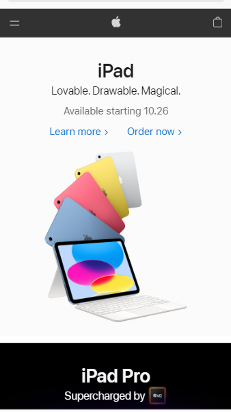
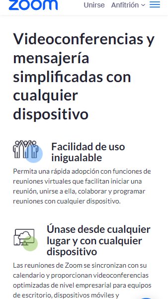
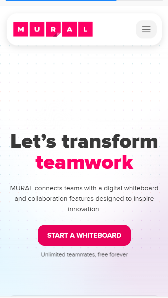

White Space
Apple

Apple uses the space between and inside the various design elements: the name of the product, a simple description, future release date, and an image of the product, on the page to make sure there is not too much information that can be tedious for the user while creating a clean view of the essential information.
Proximity
Zoom
explore.zoom.us/products/meetings

Zoom group elements (images, headings, and paragrahps) using distance between elements to make easier for the user to understand which are related and which are not. Also, the organization helps the user to navigate through the site in a smooth way.
Visual Herarchy
Mural

Through the use of different font sizes and button colors, Mural provides a quick and easy access for the user to what they are looking for. They emphasize the purpose or what can be achieved with their platform in three simple words and a button to access straightforward to the tool.